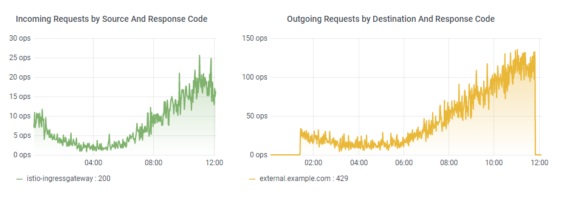
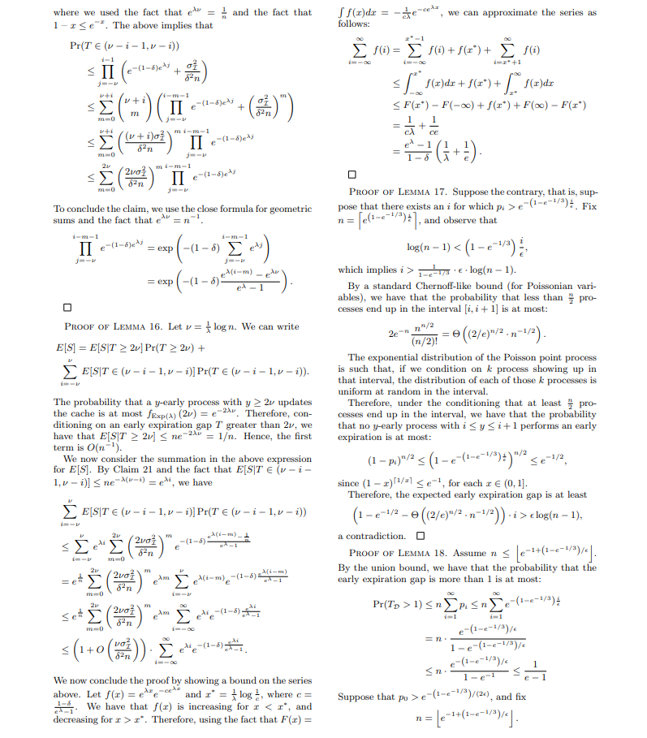
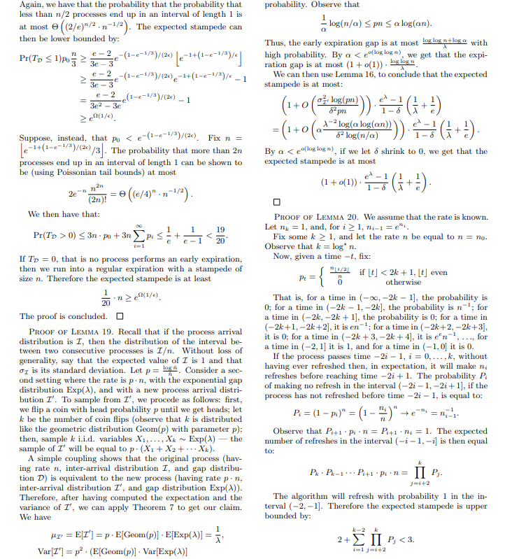
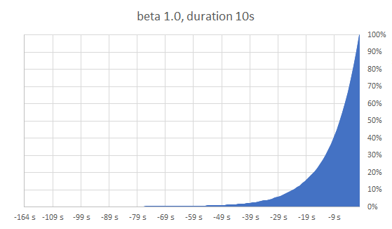
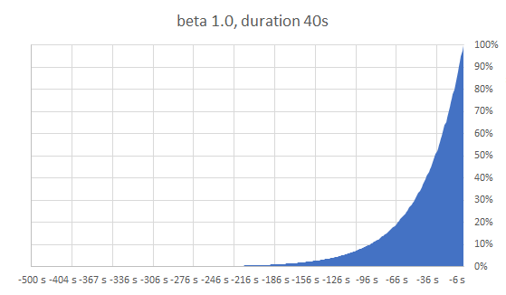
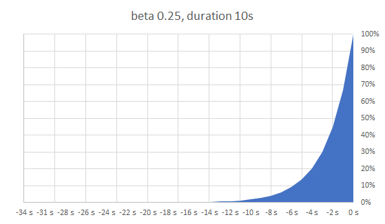
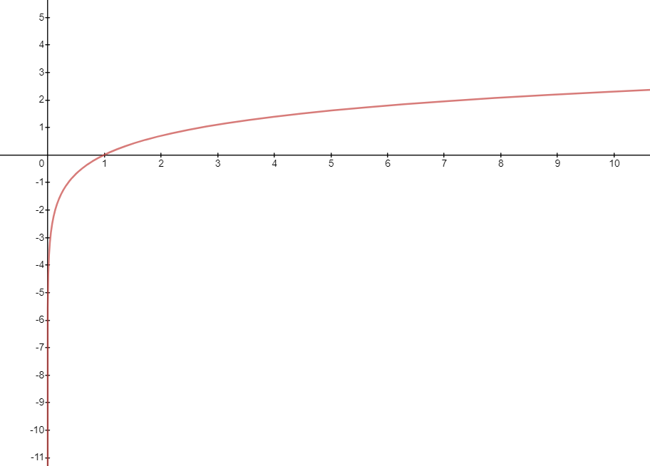

delta * beta * ln(random())
Caching
How to not shoot yourself in the foot
There are only two hard things in Computer Science: cache invalidation and naming things.
— Phil Karlton, Netscape
Was ist Caching?
Ich halte eine lokale Kopie von Daten für eine begrenzte Zeit
→ Ich tausche Speicher gegen $Vorteile
$Vorteile beinhalten:
Bessere Performance: Langsame Festplatten-, Netzwerk-, Datenbank-Zugriffe reduzieren; aufwendige (Neu-)Berechnungen gleicher Werte vermeiden
Lastvermeidung: Nicht/schlecht skalierbares (Legacy-)Backend schützen; Aufrufe kostenpflichtiger externer APIs minimieren
Fehlertoleranz: Weiterarbeiten können, obwohl ein externes System nicht erreichbar ist
Rahmenbedingungen
Möglichst hohe Cache Hit Rate
→ Anzahl der Anfragen, die aus dem Cache beantwortet werden können
Möglichst niedriger Speicherverbrauch
→ Begrenzt durch Kapazität und/oder Kosten
Möglichst keine Überalterung
→ Aktualisierungen vom Quellsystem mitbekommen
Cache Stampede
A cache stampede is a type of cascading failure that can occur when massively parallel computing systems with caching mechanisms come under very high load. This behaviour is sometimes also called dog-piling.
— Wikipedia
Eine typische Implementierung
public Value fetch(Key key) {
Value cachedValue = cache.getValue(key);
if (cachedValue == null) {
cachedValue = recompute(key);
cache.setValue(key, cachedValue);
}
return cachedValue;
}Einträge werden aus dem Cache geladen
Falls Eintrag nicht vorhanden ist (z.B. wegen Überalterung), wird er neu berechnet und im Cache abgelegt
Ideale Welt: Auf Einträge im Cache wird gleichverteilt zugegriffen
Cache Hit Rate von 80%, 100 Requests pro Sekunde
→ 80 aus dem Cache bedient, 20 neu berechnet
Es war einmal…
Situation: Cache mit einem einzigen Eintrag
…der von einem externen System kommt
…für jeden Request gebraucht wird
…und eine TTL von 4 Stunden hat
Cache Hit Rate von 100%, 20 Requests pro Sekunde
→ 20 aus dem Cache bedient, 0 an das externe System
😎
…ein böses Erwachen

😢
TTL + 1 Sekunde
20 Requests pro Sekunde
…stellen fest, dass der Eintrag veraltet ist
…laden den Eintrag neu vom externen System
→ 20 Requests pro Sekunde an das externe System
Ein Request dauert 6 Sekunden
20 Requests pro Sekunde stellen 6 Sekunden lang fest, dass der Eintrag veraltet ist
→ 120 Requests an das externe System
Heißt auch: Unter Umständen 120 blockierte Ressourcen (Verbindungen, Threads, …) und ein überlastetes externes System, längere Antwortzeiten, …
Was kann man tun?
Locking
Externe Aktualisierung
Probabilistic Early Expiration
Locking
Der erste Zugriff sperrt den Eintrag und berechnet ihn neu
Alle anderen warten auf die Aktualisierung
Nur ein Zugriff an das externe System
Implementierung
private Map<Key, CompletableFuture<Value>> pendingMap = new ConcurrentHashMap<>();
public Value fetch(Key key) throws Exception {
Value cachedValue = cache.getValue(key);
if (cachedValue != null) {
return cachedValue;
}
CompletableFuture<Value> deferred = pendingMap.computeIfAbsent(key,
k -> CompletableFuture.supplyAsync(() -> {
Value value = recompute(k);
cache.setValue(k, value);
pendingMap.remove(k);
return value;
}));
return deferred.get();
}Avoiding cache stampede at DoorDash: https://medium.com/@DoorDash/avoiding-cache-stampede-at-doordash-55bbf596d94b
Einschränkungen
Synchronisierung ist komplex
→ Deadlocks, Starvation, …
Zusätzliche Schreib- und Lesezugriffe für den Lock
Lock selbst braucht "passende" TTL
→ Weder zu lang noch zu kurz
"Alle anderen warten auf die Aktualisierung"
Plus: Locking im verteilten System?
→ Netzwerk, Latenz, …
→ Was, wenn genau der Knoten wegbricht, der gerade den Lock hat?
Externe Aktualisierung
Separater Prozess, der Einträge neu berechnet
→ Daemon Thread, Cronjob, manueller Trigger, …
Einzelne Requests laden nicht mehr nach
Nur ein Zugriff an das externe System
Ermöglicht zeitgesteuerte Aktualisierung unabhängig von Requests (stündliche Reports, …)
Implementierung
public Value fetch(Key key) {
return cache.getValue(key);
}Einschränkungen
Eine Komponente mehr, die betrieben werden will
→ Fallback, wenn der separate Prozess nicht funktioniert
Funktioniert nicht "on the fly"
→ Einträge basierend auf beliebigen Nutzereingaben?
Typischerweise deutlich höherer Speicherbedarf und unnötige Neuberechnungen
→ Nach welchen Kriterien aktualisieren?
→ 1 Million Artikel, von denen 80% (fast) nie verkauft werden?
Probabilistic Early Expiration
Einträge aktualisieren, solange sie noch gültig sind
Der alte Eintrag bleibt im Cache und kann weiter verwendet werden
Prinzip: "Verhalte dich so als wäre es Jetzt + X"
→ X wird durch Wahrscheinlichkeitsfunktion zufällig bestimmt
Jeder Request hat die Chance, den Eintrag neu zu berechnen; die Wahrscheinlichkeit dafür steigt in Richtung TTL
Dank Wahrscheinlichkeitsfunktion auch verteilt ohne Synchronisation und Locking nutzbar
Verschiedene Wahrscheinlichkeitsfunktionen möglich
Paper
"Optimal Probabilistic Cache Stampede Prevention"
Andrea Vattani, Flavio Chierichetti, Keegan Lowenstein
https://cseweb.ucsd.edu/~avattani/papers/cache_stampede.pdf (CC BY-NC-ND 3.0)
Hier: Wahrscheinlichkeit steigt exponentiell in der Nähe der TTL, TTL wird möglichst gut eingehalten
Behauptung: Optimal für alle Anwendungsfälle


Die Wahrscheinlichkeitsfunktion
random: Zufallszahl zwischen 0 und 1
ln: natürlicher Logarithmus
delta: Zeitbedarf für Neuberechnung
beta: "Einstellknopf" - empfohlener Standard 1.0
> 1.0 bewirkt eher frühere Neuberechnung
< 1.0 bewirkt eher spätere (also näher an der tatsächlichen TTL)
Unabhängig von konkreter TTL



Implementierung
private double beta;
public Value fetch(Key key) {
Item cachedItem = cache.getItem(key);
Instant now = Instant.now();
if (cachedItem == null
|| now.plusSeconds(fetchEarly(beta, cachedItem.lastFetchDuration))
.isAfter(cachedItem.expiresAt)) {
Value value = recompute(key);
Duration fetchDuration = Duration.between(Instant.now(), now);
Instant expiresAt = now.plusSeconds(ttlSeconds);
cachedItem = new Item(value, expiresAt, fetchDuration);
cache.setItem(key, cachedItem);
}
return cachedItem.value;
}
public long fetchEarly(double beta, Duration delta) {
return (long) (delta.toSeconds() * beta * -Math.log(Math.random()));
}Implementierungsdetail
Math.random() liefert [0, 1)
ln(0) ist mathematisch nicht definiert, geht gegen -Unendlich
Java kann das ab:
jshell> (long)java.lang.Math.log(0) $1 ==> -9223372036854775808

Einschränkungen
Mehr Speicherverbrauch
Wahrscheinlichkeitsfunktion bietet keine Garantien
Trotzdem noch mehr als 1 Request gleichzeitig möglich (aber Größe der Stampede deutlich geringer)
Theoretisch auch direkt erneute Neuberechnung möglich (aber sehr unwahrscheinlich)
Hilft nicht bei leerem Cache